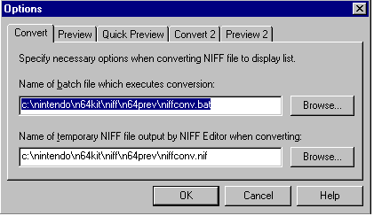
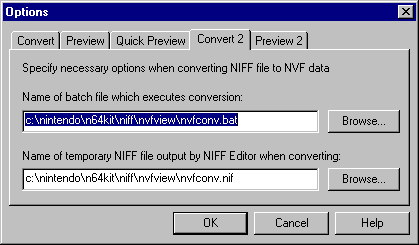
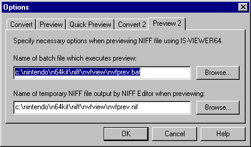

Selecting the [Options] command from the [Tools] menu opens the [Tool Options] dialog box. Use this dialog box to specify options for converting and previewing NIFF files.
Use the [Convert] tab to specify options for converting NIFF files into display lists.

Use the Preview dialog box to specify the name of the batch file to execute when the [Convert] command is selected from the [Tools] menu, as well as the name of the temporary file that NIFF Editor will output during the conversion. To locate the temporary file, click the [Browse] button, then select a file from the list provided in the File dialog box.
The default parameters are:
Use the [Preview] tab to specify options for previewing NIFF files with Nintendo64

Use the Preview dialog box to specify the name of the batch file to execute when the [Preview] command is selected from the [Tools] menu, as well as the name of the temporary file that NIFF Editor will output during the preview. To locate the temporary file, click the [Browse] button, then select a file from the list provided in the File dialog box.
The default parameters are:
Use the [Quick preview] tab to set the options for quick previewing NIFF files with the NINTENDO64 system.

Use the Quick Preview dialog box to specify the name of the batch file to execute when the [Quick Preview] command is selected from the [Tools] menu, as well as the name of the temporary file that NIFF Editor will output during quick-preview. To locate the temporary file, click the [Browse] button, then select a file from the list provided in the File dialog box.
The default parameters are:
Select the [Convert 2] tab to set the options for converting NIFF files to NVF data.

Use the Preview dialog box to specify the name of the batch file to execute when the [Convert2] command is selected from the [Tools] menu, as well as the name of the temporary file that NIFF Editor will output during the conversion. To locate the temporary file, click the [Browse] button, then select a file from the list provided in the File dialog box.
The default parameters are:
Setup the options for previewing a NIFF file on the Nintendo64, using the [Preview 2] tab.

Use the Preview dialog box to specify the name of the batch file to execute when the [Preview2] command is selected from the [Tools] menu, as well as the name of the temporary file that NIFF Editor will output during the preview. To locate the temporary file, click the [Browse] button, then select a file from the list provided in the File dialog box.
The default parameters are: